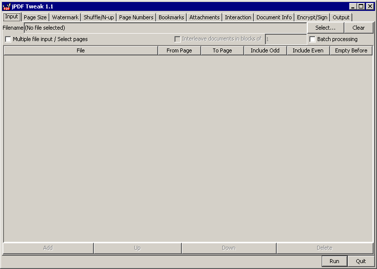
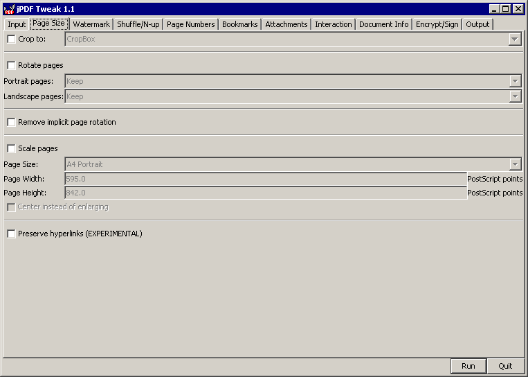
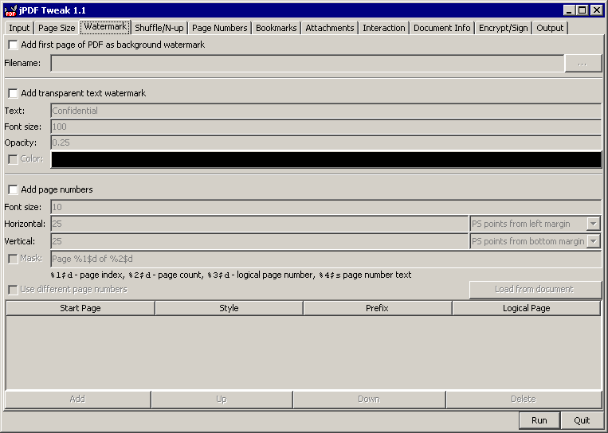
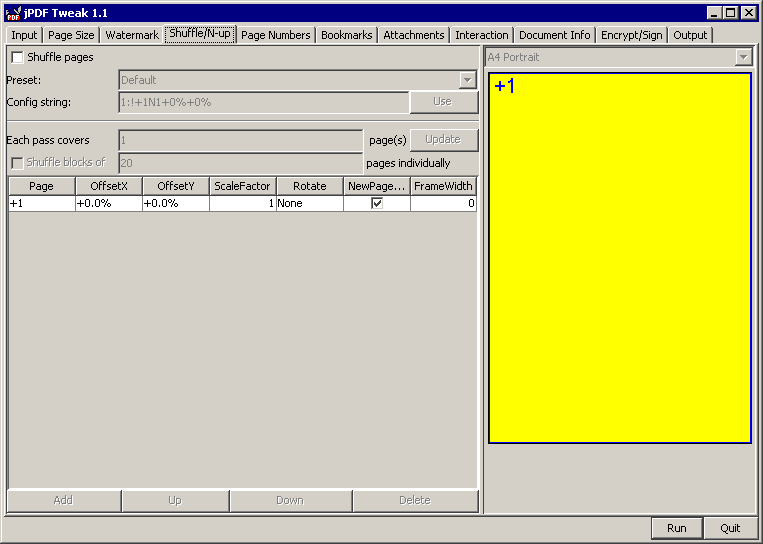
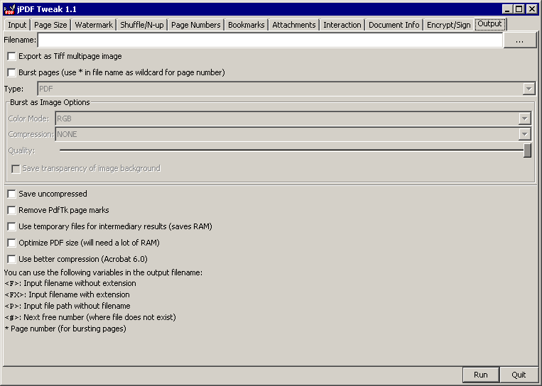

This documentation is still incomplete. But it should mention the strangest things in jPDF Tweak. If you want to help improving it, contact the author.
You will need Java 5 or higher to run jPDF tweak.
Start jPDF Tweak by running jpdftweak.bat, double-clicking jpdftweak.jar or running
java -jar jpdftweak.jar
at the command line.
The main window is divided into multiple tabs. You can select options from as many tabs as you need. Press Run when you are finished setting options.

Select an input file to manipulate. If you want to combine multiple files, check the checkbox and add more files. They will end up in the box below, where you can select pages and/or reorder them. Click Add in the lower left corner to add another entry for a file already used. If you want to process multiple files the same way, select batch processing and add multiple files. In that case, you should use variables in the output filename or each file will overwrite the previous one.
If the file is encrypted, you will need the owner password to decrypt it. Yes, I know, it is possible to decrypt by using the user password only, but it is not allowed to do so.
All page numbers start with 1 (like normal people count), not with 0 (like programmers count). To reverse the page order, use a From Page that is larger than the To Page.
In case you have odd and even pages in separate documents (or even more parts), you can use the Interleave feature to merge them again.
When combining multiple files, you might want to start each file on an odd (or even) page; you can use the "Empty before" option for this. In case you do not want to care if the document begins on an odd or even page, you can give two numbers separated by comma, for odd and even page. Therefore, 0,1 will make the document start on an odd page, 1,0 on an even page, 1,2 will make it start on an even page with the odd page before blank, etc.
Note that if you use the "combine multiple files" option, some options that are usually kept in the document are dropped, even if you only selected one file! This also applies to the command line mode - if you use the -i option, it will use multiple file mode and drop page numbers, document info, forms, etc.

Crop to: This will crop the visible part of the PDF to one of the embedded page boxes (if present); Useful if you got a PDF intended for pre-press with visible crop marks and want to distribute it without showing the crop marks.
Rotate Pages: If you have a PDF that has both Portrait and Landscape pages, and your printer has problems in printing both, you can rotate the pages so that they are all Portrait or Landscape afterwards. Of course, you can use this option as well to rotate all pages.
Remove implicit page rotation: PDF knows two ways of rotating pages; rotating the content or rotating the media (implicitly) . Some tools have problems with rotated media, so you can change all Media rotations to content rotations with this option (The option above creates media rotation as well). jPDF Tweak should work with rotated media as well. If you have problem with rotated pages, try checking this option and, if it helps, report a bug.
Scale pages: Useful if your PDF contains pages of different size. Some tools (like the Shuffle tab of this tool) require pages of equal size. Use this option to scale all pages to the same size. Of course, you can use this option as well if all pages are of equal size. In that case, you might as well use the scale option of your PDF viewer program.
PostScript points: A PostScript point is the 72th of an inch.
Center instead of enlarging: Use this option if the new page size is larger than the old one and the pages should be centered instead of enlarged.
Do not preserve aspect ratio: Causes funnily stretched pages if the aspect ratio has changed.

Here you can add two kinds of watermarks and page numbers. The text watermark appears on top of the content, the PDF watermark on bottom. So if your PDF pages are completely filled (maybe even with white color), you won't see a PDF watermark.
Text watermark and page numbers use the built-in Helvetica font (similar to Arial on Windows systems).
Page numbers can be printed on any corner or edge of the page, or in the middle (mostly useful for testing purposes). The position can be mirrored on even pages, to get the page number on the outer or inner edge for duplex documents.
If plain numbers are not enough for you, you can use a mask to format your numbers. This mask uses the same syntax as the standard Java formatting function, and supports the current page number and the total number of pages as parameters. The current page number is available in a plain way (1-n) that you can format yourself, and additionally in a shifted way (if your document's page numbers are shifted), and in a pre-formatted way (which is interesting for letters or roman numbers).
In case you want to change the page numbers for the printed values, you can do this on this tab as well, in the same format as on the Page Numbers Tab. Note that if you do not select different page numbers on the Page Numbers Tab, and no other transformation invalidates your page numbers, these page numbers will also be present in the output document as if they were configured on the Page Numbers Tab as well. So, for this common case, it is enough to configure the page numbers once.

This might be the most powerful, and the most complex tab. Choose a preset and stick with it :-)
If you want to print "booklets" that are thicker, you might prefer to shuffle blocks of 20 pages or so, then fold each of them individually and stitch them together to a "book".
If you want to build a config yourself: First specify how many pages each pass (each use of the template) covers. If you select 4 here, and your PDF has 21 pages, it will be run 6 times (5 times with 4 pages each, and once with the last page). If you give a negative number, you can take half of the pages from the end of the document instead of from the beginning. This is useful for booklet layouts.
Use positive page numbers like "+2" to refer to the second page of the template, and negative page numbers like "-3" to refer to the third page of the "opposite" template (i.e. the one if you process the file from end instead of from beginning). An absolute number without sign (like "2") refers to the same absolute page (i.e the second page of the file).
For the offsets and factors: Just tweak them until it looks correct in the preview. If you rotate a page and it is gone, this is most likely caused by the fact the the rotation used the lower left corner as center point and not the center of the page.
Uncheck the NewPageBefore to put more than one source page onto one destination page.
Yes, creating a config with both positive and negative numbers can be confusing. For a test, you might add huge page numbers to your document (see previous tab) so you can see quickly if your config is correct.
Here you can tweak the page numbers that appear in your PDF reader. Depending on your PDF reader, they can be used for displaying the current page in the toolbar and status bar, jumping to a page by its number and/or printing page ranges. Most printed documents have some kind of title pages and or table of contents that are outside of the page numbers or are numbered with Roman numbers. This makes it hard if you read about something "on page 200" to jump to this page 200, because it will be the 205th page and not the 200th if there are five pages before page 1.
Note that these page numbers do not appear on the page itself. For this kind of numbers, there is an option on the "Watermark" tab.
To just change the number of the first physical page, click "Add" once, leave the "Start Page" at one and change the other controls. If you want to have "gaps" in your page numbers, add more lines and use "Start page" to point to the physical page numbers (i. e. those that start from 1) where the format should change.
Assume you have a 6 page PDF, and you set it up as follows:
| Start Page | Style | Prefix | Logical Page |
|---|---|---|---|
| 1 | Empty | Title | 1 |
| 2 | I, II, III | 4 | |
| 5 | 1, 2, 3 | S | 32 |
Then the six pages will have numbers Title, IV, V, VI, S32, S33.
Be careful that your document does not end up having two pages with the same number (as represented as text) - some versions of Adobe Reader don't really like that. You can work around it by setting a prefix for these pages or use different number styles.
Here you can tweak chapter bookmarks. If you selected more than one input file, chapter bookmarks will be combined automatically. But if you select individual pages or ranges instead of the full document, you will have to tweak the bookmarks manually.
If you want to create bookmarks from scratch, it is useful to open existing PDFs and look what the bookmarks look like in there. If you want to add bookmarks that do not only point to a page but to a position on a page, you might need a tool like GSView (from GhostScript) which shows coordinates when moving the cursor on a PDF file.

Here you can add attachments and remove files you erroneously attached before. This view does not show which files have been attached to the original document. If you need them, use your PDF viewer to save them and reattach them if necessary.

This tab is interesting. When a PDF file is shown in full screen mode, pages can flip automatically and/or with a nice effect. Select effects and/or durations (durations are in seconds) on the left. You can set viewer preferences (how the document should be opened) on the right.
Here you can add information to the document info dictionary (shown when you open "Document summary"
Encrypting is quite standard nowadays, so I won't write much here. If you know the owner password, you may do everything with the document; if you know only the user password, you may only do things checked below. The user password may be empty, the owner password may not (but you can use the same password for both if desired).
Signing is a bit more tricky, since you need a key and a certificate for this to be useful. Import that key into a Java KeyStore (using Sun's keytool tool), and you can use it from here.

Don't forget this tab! Select an output filename here. If you select a name of an existing file, you will receive a warning. However, if you run jPDF tweak more than once, it will not create a warning since warnings are annoying if you are just trying to find the right settings by trial and error.
You may optionally burst the document into single page PDFs. Note that not all features (like bookmarks, transitions or viewer preferences) make sense when you burst a document.
When you save a document uncompressed, you can add page marks (compatible to pdftk's page marks) to find pages easier in the PDF source code. Search for "pdftk_PageNum" in the uncompressed PDF to find a page. When you compress a PDF again, you can remove these marks.
In case the matching JMuPdf native library is present, you can also burst the document to images or save it as a multipage TIFF document.